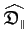

Next: Optimisation of the local Up: The four parameter combinations Previous: The four parameter combinations Contents Index
This is the simplest category as it involves solely the optimisation of the model-free parameters of an individual residue while the diffusion tensor parameters are held constant.
The model-free parameters belong to the set
 of the residue i.
The models include m0 to m9 and the dimensionality is low with
of the residue i.
The models include m0 to m9 and the dimensionality is low with
| dim | (15.1) |
for the most complex model m8 = {S2, τf, S2f, τs, Rex}. The relaxation data of a single residue is used to build the chi-squared value, gradient, and Hessian.